Help your people look forward to coming to work again
Mindfulness Training for people to recover their spark at work
Rediscovering their Best
It’s tough seeing your people struggling in stressful situations that aren’t their fault. You know they are doing the best they can, but you’re stretched yourself. How can you support them more?
You feel responsible, but you’re up against broken systems, a difficult environment, an ingrained culture…circumstances beyond your control.
But set them on the right path and you can help them rediscover their best - in any situation.
Inner Lantern has helped hundreds of people like your people, from dozens of organisations like yours, come alive at work and take that life home with them.
All through leaders like you nurturing your people to lead themselves.
Hi, I'm Brendan
Pressures can seem relentless in our lives. Not another issue! When will it be enough?
The end of the day, the week, or the next vacation beckons like a port in a desperate storm. We yearn for some peace amongst that turbulence.
I know the feeling well.
Many years in corporate environments - from Australia, to Africa, to Asia – working, running teams, consulting and teaching – has underscored to me the incredible value of Mindfulness practice for people in challenging situations.
In fact, my greatest professional pleasure has been to witness ease, confidence and hope return to people as the unseen potential within Mindfulness practice dawns within them.
It has been one thing to study under masters around the world, and another to calibrate Mindfulness practice to the challenges of everyday life at work and at home.
This has shaped the programs I deliver for people aching to bring their work and life under control again.


Build a Stronger Team
Build their emotional immune system. More than just relaxation or stress recovery, your people learn the skills to dwell in a more optimistic mindset – despite the obstacles they face. It’s cure, more than pain relief.
Craft the program to your specific needs. You know what your people are facing. Work with us to taylor the program to the needs of you and your group.
Nurture your culture. Change perspective and you change everything. As the individuals in your team step into more empowered mindsets, collectively your team is powered by a more vibrant culture. Individuals are healthier. The team is stronger. We measure this change in pre and post surveys.
Give them a weekly “re-set” on their journey to better habits. Is there anything more invigorating than hope? Each session itself is refreshing – partly through meditation practices, but mainly through discovering new tools to apply.
Send them home at their best. A more refined mind is a gift that keeps giving. By helping them to be more at their best at work, you’re helping them to be more at their best at home.
Leading Self-Raising People
There’s something incredibly frustrating about seeing people struggle. And when you see them grow out of their difficulties, it feels almost as good to you as it does to them. It’s for this very reason that Inner Lantern exists. We love that feeling too.
The class was fantastic! By applying what I learned I was arriving [at work] more relaxed and with more energy.
Nick. Product Manager.I have been a police officer for 20 years and felt overwhelmed by a tsunami of issues in my work and home life. [As a result of] this course, I worked through them all. I strongly recommend this course.
Kate. Police Officer.Through this course I was able to turn negative situations into positive outcomes – not only benefiting myself, but all the people involved. It is amazing to see how little we have to change the way we react to have so much better outcomes!
Maggie. Invoicing administrator.You can bring the best out of your team
1. Schedule a chat
Connect to discuss your unique situation and arrange a course or talk for your people.
2. Let us nourish your team
Rest assured that the program is tailored to help your team grow into their best.
3. See them bring more of
themselves to work again

Take pride in seeing them more at their best again.
No doubt it’s important that we learn to relax. Unwind. Let go of the stress. We need to decompress to be ready for the next round.
But relaxation is just a side effect of mindfulness practice.
The real juice in Mindfulness training is that we begin to experience our upside - an upside we didn’t know was there.
We learn to handle what we thought we couldn’t handle. So, we get less stressed - and more effective - in the first place. And we feel better about ourselves and our situation.
The greatest leverage comes from seeing our situations clearly. Then we apply the right effort, at the right time, in the right way. This is the power of Mindfulness training.
“Quality – The Greatest Investment”
Introduction to Mindfulness Talk
“The Freedom to Be Your Best” Course
(10 People)
Participants:
Let’s talk.
Everyone and every situation is unique. So, every leader has different needs for their people.
Contact me so we can discuss yours, and tailor the content, timing, class size and method of delivery of these programs to give the most benefit to you and your people.
And please let me know your preferred method of contact.
I’ll get back to you within 24-48 hours.
Looking forward to connecting with you.
Warm regards,
Brendan